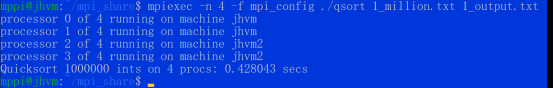
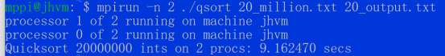
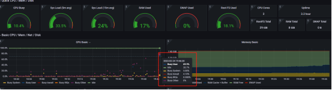
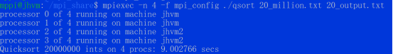
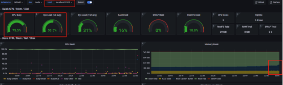
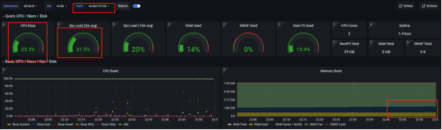

我先在开头做一个总结，表达我最终要做的事情和最终环境是如何的，然后我会一步步说明我是如何搭建。
要做的事情
尝试如何使用多台机器的算力共同跑一个CPU密集型或者GPU密集型的任务。这里以CPU密集型为例子。
在多台机器搭建MPI环境，构建MPI集群共同跑1亿个数据的快排任务，并且对机器的各种指标（如CPU，内存，磁盘，网络等）做可视化监控。
最终环境
我这里选择的云平台是Microsoft Azure，使用两台机器做实验，两台操作系统信息一致为：Linux (ubuntu 18.04) Standard B2ms (2 vcpu，8 GiB 内存)，两台虚拟机实现了ssh免密互通，通过nfs在其中一台虚拟机创建共享空间，让另一个虚拟机可以远程挂载访问，两台虚拟机通过rpc进行通信，两台虚拟机都配置好了可以运行MPI的环境，配置好了prometheus+node_exporter+grafana，每个服务所需要的端口都已经通过azure安全组打开。
如何配置？
1.虚拟机初始化
我选用了Microsoft Azure的产品，订阅了UoL-Teaching-SOC-MCC后，找到了给我分配的资源组：* uol_feps_soc_comp5850m_xxxxxx。（学校给我分配的，大家可能要自己去购买使用）我在上面构建了两台虚拟机，一台叫做jhvm（51.11.167.xx），另一台叫做jhvm2（20.254.126.xx），同时在两台虚拟机上我都创建了同样的用户名mppi，为了保证登录的安全性，我选择使用密钥进行登录，即：
ssh -i jhvm_key.pem mppi@51.11.167.xx
即公钥会保存在服务器上，私钥则在本地，在创建虚拟机的时候，Azure会问你是否使用非对称密钥进行登录，选择是后，即可下载.pem文件。
2.如何实现两个虚拟机的免密登录
首先为了不再使用ip而是使用昵称，我在/etc/hosts上增加了：
51.11.167.xx node1
20.254.126.xx node2
/etc/ssh/sshd_config中设置
PubkeyAuthentication yes
确保开启了密钥登录。对node1和node2节点的家目录设置权限为700，否则可能会存在免密登录失败的问题，在node1上，我通过
ssh-keygen -t rsa
生成公钥私钥到.ssh目录，把**.ssh目录权限设置为600，主要不能有写权限**，不然可能会免密失败，然后通过
ssh-copy-id -i .ssh/id_rsa.pub mppi@node1
ssh-copy-id -i .ssh/id_rsa.pub mppi@node2
命令后，输入了node2用户mppi的密码，把公钥放到了node2的.ssh/authorized_keys文件中，同时再使用scp命令把私钥也复制给node2节点(node1也要，因为他会放进authorized_keys文件中，让node2也能免密登录node1)。
scp .ssh/id_rsa node2:/home/mppi/.ssh
至此，node1和node2都同时有了公钥和私钥，我们输入ssh node2命令，即可免密登录进node2，node2使用ssh node1也能免密登录进node1。
3.mpi集群环境搭建
切换到root权限，我们执行
apt-get install mpich
命令即可下载mpi环境。把qsort.c放到/home/mppi/mpi_share里。这里不会对mpi原理过多讲解，主要还是如何使用工具搭建好要的环境。感兴趣的话大家可以google或者baidu等自行搜索。这里的代码主要作用是获取Input.txt文件的内容：先获取文件的第一个数字n，代表有n个数，然后获取n个数，即我随机生成的n个数，然后会把排序好的数据放到output.txt中，input.txt和output.txt名字可以通过参数指定。mpi可以通过-n指定cpu个数。
对mpiexec(mpirun)感兴趣的同学，可以通过man mpiexec(mpirun)去查看说明文档。
/*
qsort.c - Parallel sorting algorithm based on quicksort
Original code by Hans-Wolfgang Loidl
Heriot-Watt University, Edinburgh
Adapted by Karim Djemame
Execution time includes input, processing and output
February 2023
compile: mpicc -Wall -o qsort qsort.c
run: mpirun -np num_procs qsort in_file out_file
num_procs: number of processors
in_file: input file to sort
out_file: result file
Example: on a single machine:
mpirun -np 2 qsort input.txt output.txt
*/
#include <stdio.h>
#include <stdlib.h>
#include <mpi.h>
#include <time.h>
double startTime;
/* swap entries in array v at positions i and j; used by quicksort */
static inline /* this improves performance; Exercise: by how much? */
void swap(int *v, int i, int j) {
int t = v[i];
v[i] = v[j];
v[j] = t;
}
/* (quick) sort slice of array v; slice starts at s and is of length n */
void quicksort(int *v, int s, int n) {
int x, p, i;
// base case?
if (n <= 1)
return;
// pick pivot and swap with first element
x = v[s + n / 2];
swap(v, s, s + n / 2);
// partition slice starting at s+1
p = s;
for (i = s + 1; i < s + n; i++)
if (v[i] < x) {
p++;
swap(v, i, p);
}
// swap pivot into place
swap(v, s, p);
// recurse into partition
quicksort(v, s, p - s);
quicksort(v, p + 1, s + n - p - 1);
}
/* merge two sorted arrays v1, v2 of lengths n1, n2, respectively */
int *merge(int *v1, int n1, int *v2, int n2) {
int *result = (int *)malloc((n1 + n2) * sizeof(int));
int i = 0;
int j = 0;
int k;
for (k = 0; k < n1 + n2; k++) {
if (i >= n1) {
result[k] = v2[j];
j++;
} else if (j >= n2) {
result[k] = v1[i];
i++;
} else if (v1[i] < v2[j]) { // indices in bounds as i < n1 && j < n2
result[k] = v1[i];
i++;
} else { // v2[j] <= v1[i]
result[k] = v2[j];
j++;
}
}
return result;
}
int main(int argc, char **argv) {
int n;
int *data = NULL;
int c, s;
int *chunk;
int o;
int *other;
int step;
int p, id;
MPI_Status status;
double elapsed_time;
FILE *file = NULL;
int i;
if (argc != 3) {
fprintf(stderr, "Usage: mpirun -np <num_procs> %s <in_file> <out_file>\n", argv[0]);
exit(1);
}
MPI_Init(&argc, &argv);
MPI_Comm_size(MPI_COMM_WORLD, &p);
MPI_Comm_rank(MPI_COMM_WORLD, &id);
char processorname[100];
int namelen;
MPI_Get_processor_name(processorname, &namelen);
printf("processor %i of %i running on machine %s\n", id, p, processorname);
MPI_Barrier(MPI_COMM_WORLD);
elapsed_time = - MPI_Wtime();
if (id == 0) {
// read size of data
file = fopen(argv[1], "r");
fscanf(file, "%d", &n);
// compute chunk size
c = (n % p != 0) ? n / p + 1 : n / p;
// read data from file
data = (int *)malloc(p * c * sizeof(int));
for (i = 0; i < n; i++)
fscanf(file, "%d", &(data[i]));
fclose(file);
// pad data with 0 -- doesn't matter
for (i = n; i < p * c; i++)
data[i] = 0;
}
// start the timer
// MPI_Barrier(MPI_COMM_WORLD);
// elapsed_time = - MPI_Wtime();
// broadcast size
MPI_Bcast(&n, 1, MPI_INT, 0, MPI_COMM_WORLD);
// compute chunk size
c = (n % p != 0) ? n / p + 1 : n / p;
// scatter data
chunk = (int *)malloc(c * sizeof(int));
MPI_Scatter(data, c, MPI_INT, chunk, c, MPI_INT, 0, MPI_COMM_WORLD);
free(data);
data = NULL;
// compute size of own chunk and sort it
s = (n >= c * (id + 1)) ? c : n - c * id;
quicksort(chunk, 0, s);
// up to log_2 p merge steps
for (step = 1; step < p; step = 2 * step) {
if (id % (2 * step) != 0) {
// id is no multiple of 2*step: send chunk to id-step and exit loop
MPI_Send(chunk, s, MPI_INT, id - step, 0, MPI_COMM_WORLD);
break;
}
// id is multiple of 2*step: merge in chunk from id+step (if it exists)
if (id + step < p) {
// compute size of chunk to be received
o = (n >= c * (id + 2 * step)) ? c * step : n - c * (id + step);
// receive other chunk
other = (int *)malloc(o * sizeof(int));
MPI_Recv(other, o, MPI_INT, id + step, 0, MPI_COMM_WORLD, &status);
// merge and free memory
data = merge(chunk, s, other, o);
free(chunk);
free(other);
chunk = data;
s = s + o;
}
}
// stop the timer
// elapsed_time += MPI_Wtime();
// write sorted data to out file and print out timer
if (id == 0) {
file = fopen(argv[2], "w");
fprintf(file, "%d\n", s); // assert (s == n)
for (i = 0; i < s; i++)
fprintf(file, "%d\n", chunk[i]);
fclose(file);
// stop the timer
elapsed_time += MPI_Wtime();
printf("Quicksort %d ints on %d procs: %f secs\n", n, p, elapsed_time);
}
MPI_Finalize();
return 0;
}
同时在同一个目录下添加mpi_config文件，输入(即node1和node2都开启两个cpu去跑的意思)
node1:2
node2:2
然后为了测试我们mpi集群是否搭建成功，我们按照qsort.c文件的入参要求，设置了input.txt和output.txt，其中input.txt里我放了1 million个数字做测试，第一个代表要排序数字的个数n，后面跟着n个数。然后为了测试是否是成功运行在两台机器上，把qsort.c通过命令编译成qsort：
mpicc qsort.c -o qsort
通过mpiexec -n 4 -f mpi_config ./qsort 1_million.txt 1_output.txt命令执行后，通过输出发现jhvm和jhvm2都分别有2个进程在做运算，说明我的环境搭建成功。

失败的同学可能是mpi需要的端口没开。
4.nfs和rpcbind搭建
NFS(Network File System)主要功能是通过网络来做文件存储，使用NFS可以实现多台服务器之间数据共享，NFS之间通过rpc进行通信。这里同样不会对原理过多讲解，主要还是如何使用工具搭建好要的环境。感兴趣的话大家可以google或者baidu等自行搜索。
通过
apt-get install nfs-kernel-server
apt-get install rpcbind
# 失败的同学可以先执行apt-get update, 刷新源索引列表
命令下载好nfs共享目录的工具和rpc通信方式（启动的时候需要先启动rpc，因为nfs需要先找到rpc去绑定），我选择使用node1节点作为主节点，修改/etc/exports文件，添加配置：
/home/mppi/mpi_share node1(rw,sync,no_root_squash,no_subtree_check)
/home/mppi/mpi_share node2(rw,sync,no_root_squash,no_subtree_check)
# 可参考 https://blog.csdn.net/weixin_45361475/article/details/117754118
# 可参考 http://events.jianshu.io/p/3035c7636d23
里面的地址就是要共享目录的位置，然后我们分别在node1和node2的这个位置去创建文件夹mpi_share，然后启动node1节点的rpc服务，再启动nfs-server服务，node2也需要启动rpc并通过
mount -t nfs node1:/home/mppi/mpi_share
命令挂载到node1同位置目录上。然后我尝试在node1节点创建了一个文件，在node2同位置路径下也出现了相同文件，说明我搭建成功了，我们以后有任何要计算的任务，可以只把文件复制到node1节点上即可，不需要手动的去复制到node2，或者集群扩充后的node3等等，非常的方便。
不使用nfs+rpc其实mpi也能跑，但是需要自己手动复制文件到node2节点，用mpi跑的时候直接**-hosts**即可：
mpirun -n 4 -hosts node1:2,node2:2 ./qsort input.txt output.txt
5.node_exporter
通过教程了解并且搭建好node_exporter, prometheus, Grafana，这三者的关系是：prometheus是可以通过node_exporter获取到多个机器的各种指标信息，Grafana是对prometheus的可视化。
搭建教程：https://medium.com/devops-dudes/install-prometheus-on-ubuntu-18-04-a51602c6256b
通过教程在整合过程中，我发现教程给的node_exporter版本号太低了，所以我后面自己重新下载了0.18.1版本的node_exporter（因为在grafana很多现成的dashboard都需要node_exporter版本0.18或以上），随后跟着教程把node_exporter二进制文件放到/usr/local/bin里管理，同时为node_exporter构建一个不可登录的用户去管理，然后在创建/etc/systemd/system/node_exporter.service，配置好unit，service和install后，重新加载守护进程，运行node_exporter即可。
6.prometheus
也是通过给的教程，安装了2.1.0版本的prometheus，同样也是把二进制文件放到/usr/local/bin里，为prometheus创建一些数据目录：/etc/prometheus /var/lib/prometheus，把一些配置文件，像consoles或者console_libraries等放到/etc/prometheus里。
添加prometheus的配置文件：/etc/prometheus/prometheus.yml，设置抓取速率等，配置job_name和指标可用的端口号，为prometheus也创建一个不可登录的账号进行管理，并修改权限，以免被修改。随后也创建prometheus.service配置好unit，service和install，重新加载systemd，然后运行prometheus即可。通过ip:9090成功显示网页，环境成功搭建。
7.Grafana
这里和node_exporter一样，我没有使用教程给的版本号，而是使用的9.2.3版本，因为5.0.4实在太老了，很多dashboard不能用。解压后root下通过systemctl daemon-reload && systemctl 启用 grafana-server && systemctl start grafana-server.service即可。通过url：ip:3000有dashboard界面，我成功搭建了grafana。在grafana指定了data sources后，输入了对应的ip:9090，并且我在 https://grafana.com/grafana/dashboards/?dataSource=prometheus 找到了一个非常合适的、同时也是非常流行的dashboard：node exporter full，可以可视化主机上很多的性能指标，比如cpu、内存、磁盘、网络等等。配置好后即可显示vm上的各项指标。
实验设计
我会分为两个部分，第一个部分则是最为简单的单个虚拟机情况，第二个则是双虚拟机集群情况。
我会分别尝试单机开启2，4，8个进程去跑100万、500万、1000万和2000万的快排数据，也就是说会有3x4=12个输出。比如说2个进程的时候跑100万、500万、1000万和2000万的随机生成数据。
生成数据的原则：当要生成100万数据的时候，我随机生成的范围为0-200万，跑500万、1000万和2000万数据的时候，随机的范围则和他们的数据量大小相等。
单机部分我会根据本虚拟机cpu个数，和开启的进程个数，快排算法跑完时间做对比才考，并且会通过grafana可视化cpu、磁盘、内存的情况，做出分析和总结。
在第二个集群跑快排的部分，我同样会有12个输出，3种不同的进程数量尝试4种不同数量大小的快排。同样会去根据两边cpu的总个数，一共开启的进程数，通过grafana去查看cpu、内存、磁盘去思考+总结。
实验结果
单台
在一台具有2cpu的虚拟机上，我们尝试在不同数量的进程下运行100万、500万、1000万和2000万个随机数的数据大小。我们发现，只有当CPU数量=进程数量时，快速排序的效率最高，并且已经验证了计算密集型工作与CPU之间的关系是平等的，效率更高。我们还注意到，只有在运行数千万数据时，内存才会略有波动。如果不使用mpi等高效的流程协作工具，也不使用快速排序等高效算法，那么内存使用和CPU使用将更加明显。一个是因为CPU需要很长时间，另一个是由于数千万的数据本身已经是数百兆字节。

node1 grafana:

跑2000万数据，单台虚拟机的cpu飙升到60%多。
多台
事实上，得出的结论与单个虚拟机的结论相似。接下来，我将重点介绍与单个虚拟机报告的不同之处。因为我们使用一个集群（两台机器）来运行快速排序算法，所以使用了这两台机器的所有CPU，从而增强了计算能力，而且我们还可以发现，当使用2cpu/每台vm时，集群状态所需的计算时间更少，这也意味着我们的集群可以充分利用每个vm的资源来分配操作，对于一些需要复杂操作并且可以划分为子操作的任务来说，这无疑是个好消息。

node1 grafana:

node2 grafana:
